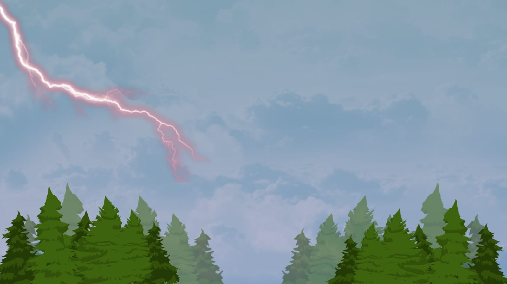

Komandan: "Waduh sepertinya akan turun hujan!"
Apakah kamu tahu?
Setiap benda yang bergetar dan menghasilkan bunyi disebut sebagai sumber bunyi. Bunyi yang dihasilkan oleh sumber bunyi akan merambat dalam bentuk gelombang bunyi sampai terdengar oleh telinga kita. Maka dari itu, gelombang bunyi merupakan contoh gelombang mekanik yang memerlukan medium untuk merambat. Bunyi hanya dapat merambat jika ada medium seperti padat, cair, atau gas.
Setiap benda yang bergetar dan menghasilkan bunyi disebut sebagai sumber bunyi. Bunyi yang dihasilkan oleh sumber bunyi akan merambat dalam bentuk gelombang bunyi sampai terdengar oleh telinga kita. Maka dari itu, gelombang bunyi merupakan contoh gelombang mekanik yang memerlukan medium untuk merambat. Bunyi hanya dapat merambat jika ada medium seperti padat, cair, atau gas.
Pertanyaan:
Menurut pendapatmu, antara medium padat, cair, dan gas, bunyi akan paling cepat merambat melalui medium yang mana?
Jawaban:
Jawabannya zat padat. Pada zat padat (seperti besi atau aluminium), molekul-molekul tersusun sangat rapat dan terikat kuat. Struktur ini membuat getaran bunyi berpindah lebih cepat, sehingga bunyi merambat paling cepat melalui medium padat.
Jawabannya zat padat. Pada zat padat (seperti besi atau aluminium), molekul-molekul tersusun sangat rapat dan terikat kuat. Struktur ini membuat getaran bunyi berpindah lebih cepat, sehingga bunyi merambat paling cepat melalui medium padat.